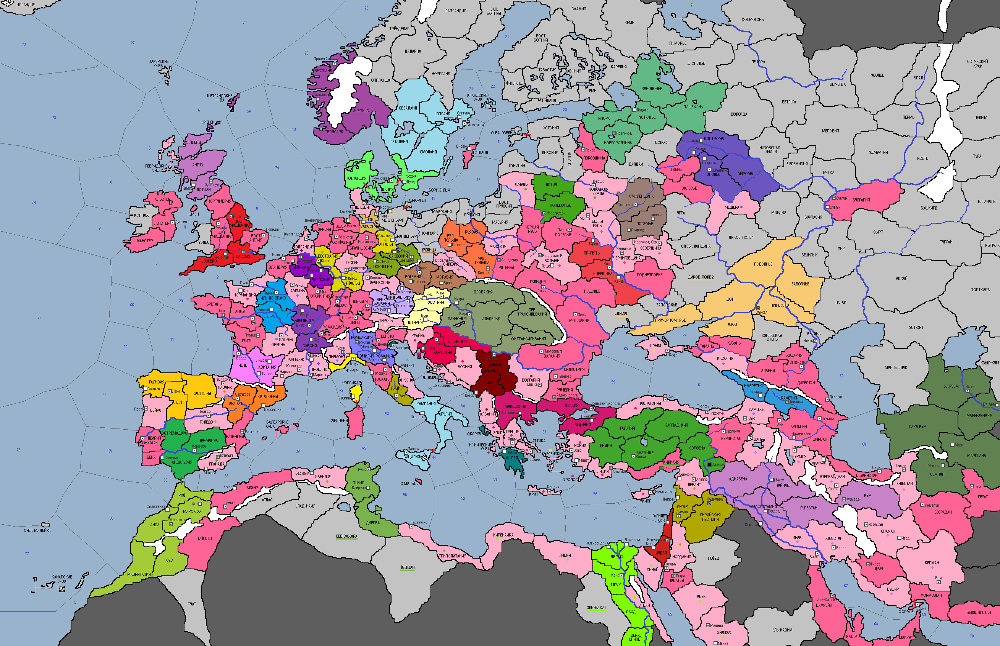

Омар Хайам
Омар Хайам - персидский философ, математик и астроном, известный во всём мире как выдающийся поэт, автор цикла философских рубаи, жил и работал в г.Нишапуре до самой своей смерти в 1131 г. Наследием Омар Хайяма стали большое количество литературных произведений и самый точный из ныне используемых календарей. [+1 н/о и +1 кт/о в ход стране, владеющей г.Нишапур]
· Французский священник Луи де Ноай под именем Иннокентия II избирается Папой Римским. Кандидат оказался очень молод, но его избрание понтификом затянулось на полгода и сопровождалось жутким скандалом, устроенным одним из германских кардиналов.
· Магнус I Добрый восходит на престол Дании, скрепив традиционные отношения с Англией браком на принцессе Матильде.
· Альфонсо VII становится новым королем Кастилии и Леона и учреждает Орден Госпитальеров.
· Лоренцо ди Стефано – новый дож Венецианской республики.
· Абу Аль-Касим I под надзором регентского совета начинает управлять Фатимидским государством. Шииты вводят практику уплаты джизьи иноверцами, взаимен сохраняя им право на свою веру.
· Малолетний Яхья Аль-Мумин продолжил династию отца в Кордове. Учреждается шафиитский мазхаб.
· Мартин I, поздний сын короля Альфонсо, продолжил линию дома Химена в Арагоне.
· Сицилийское королевство возглавляет Рожер III.
· Гильом I Молодой в 5-ти летнем возрасте садится на трон Англии.
· Совет Ганзы, пользуясь вакуумом власти, образовавшимся в Империи после смерти императора Лотаря II, решил прибрать земли Везера. В 1130 г. торговый союз объявляет войну и направляет войска к границам соседа. Эмиссарам имперской канцелярии удалось с большим трудом настичь войска и напомнить о соблюдении устава СРИ. Инцидент на этом был исчерпан.
· «Пляску смертей» 1130 г. продолжил Людовик IV Толстый, оставивший трон Франции сыну – Филиппу II Августу.
· Иерусалимскому правителю Балдуину II повезло меньше. Ему пришлось оставить трон дочери – Мелисенде. Она, понимая, что руководит страной, имеющим отношение к евреям, отдает указание об их изгнании за пределы страны. Но поиски евреев, которых можно было бы изгнать прочь с Земли Обетованной ни к чему не привели… Мелисенда в бешенстве закрывает все ранее открытые посольства, обвинив правителей этих стран, что «они перетянули к себе всех евреев».
· Алексей II Комнин наследовал императорский трон Византии. Начав править в тяжелые для страны годы, Алексей II смог завершить начатое отцом дело и учредил Константинопольскую (всемирную) патриархию.
· Великим князем киевским становится сын Владимира Мономаха – Мстислав Великий. Совершая паломничество к святым местам, Мстислав познакомился с грузинской принцессой Тамарой, на которой и женился в 1130 году.
· Отто III, сын покойного императора Лотаря II, становится герцогом Саксонии. Происками и кознями сторонникам династии Супплинбургов не удалось посадить мальчика на трон императора СРИ.
· Престол Аквитании занимает Гильом X.
·
·
·
·
·